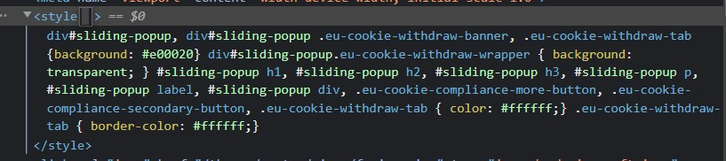
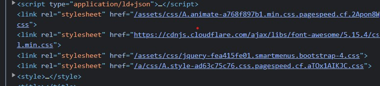

Opdracht 3
Op de website van Vives wordt er geen gebruik gemaakt van aparte CSS-bestanden, maar wel van style blokken, zoals je kan zien op de printscreen.
Op de website van Miras worden er links gelegd naar andere CSS-bestanden, zoals je ziet op de printscreen. Er wordt verwezen naar 4 CSS-bestanden.
Op de website van VRT wordt er geen gebruik gemaakt van aparte CSS-bestanden,